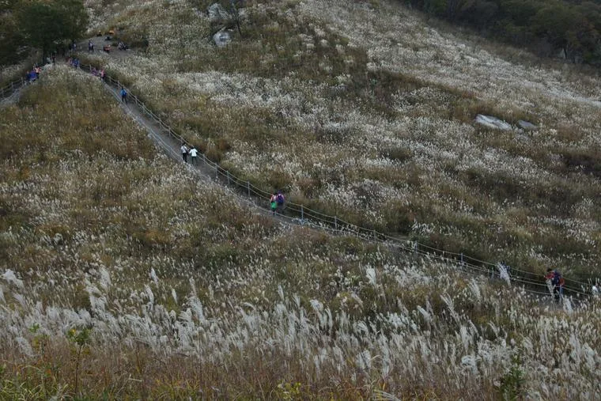
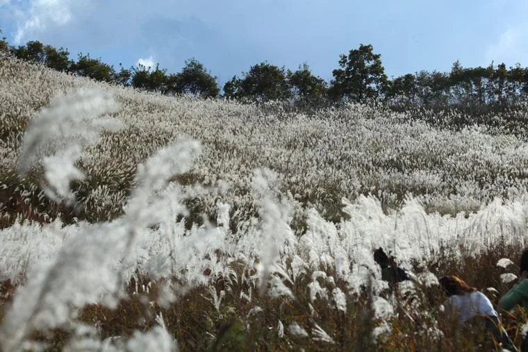
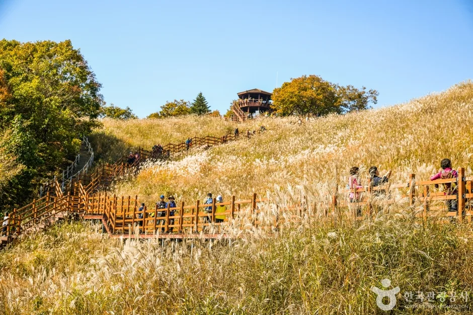
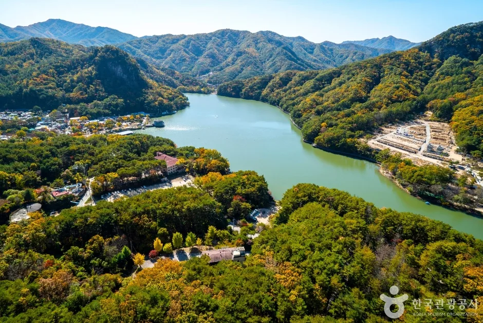
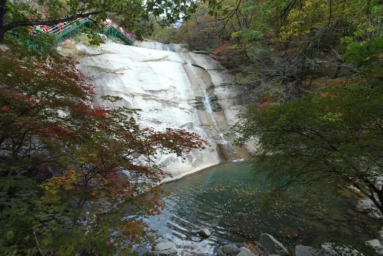
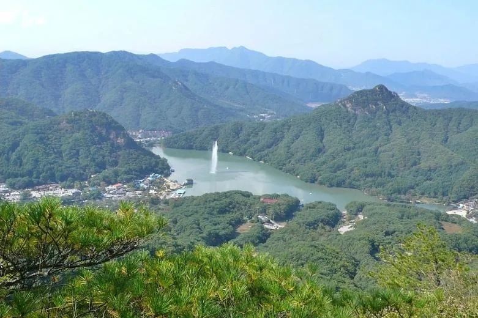
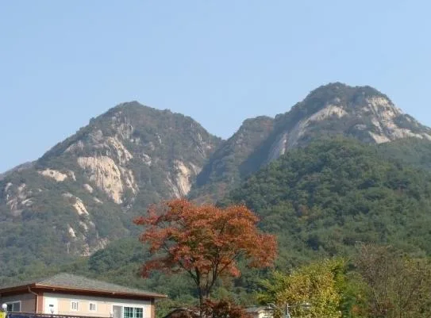
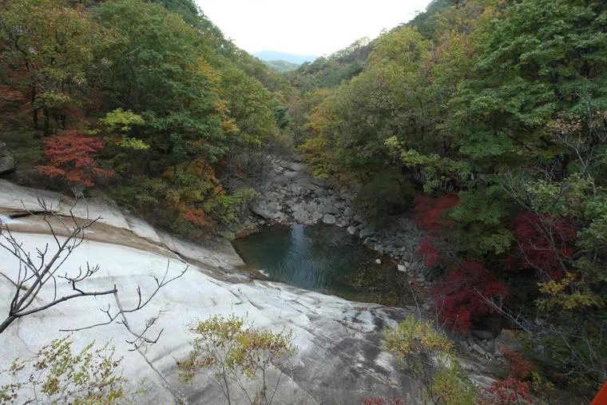
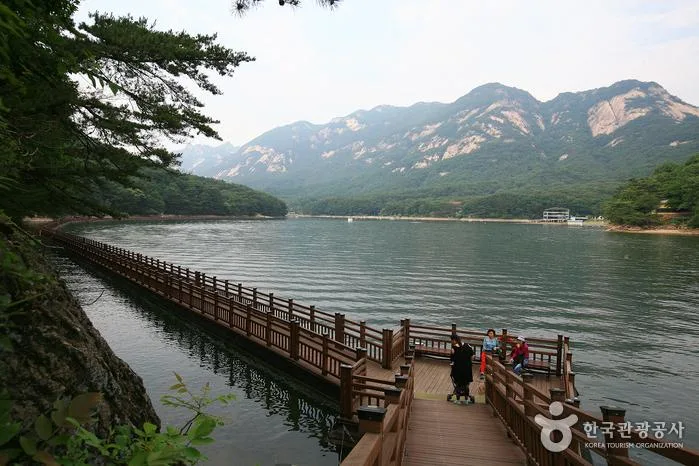

▲ 명성산 억새밭 탐방로. 해발 923m 능선을 덮은 억새 사이로 좁은 외길 데크가 이어져, 절정기에는 이 구간부터 정체가 시작된다 ⓒ 공공누리 제1유형(경기도)

▲ 명성산 억새는 9월 말부터 빛깔이 바뀌기 시작해 10월 중순 은빛으로 절정에 오른다 ⓒ 공공누리 제1유형(경기도)
정선 민둥산, 울산 신불산, 보령 오서산, 장흥 천관산과 함께 전국 5대 억새군락지로 꼽히는 포천 명성산(해발 923m). 그중에서도 명성산은 서울에서 가장 가깝다는 이유로 유독 몰린다. 문제는 여기서 시작된다. 가장 가까운 억새밭이라는 접근성이, 역설적으로 가장 지독한 주차난을 만든다. 이 글은 '왜 막히는가'라는 질문에서 출발해 산정호수 주차장의 구조적 원인과 등산로 병목을 짚고, 그걸 피해 가는 구체적인 방법까지 순서대로 정리했다.
📍 먼저 밝힙니다
명성산 억새의 절정 시기는 매년 10월 중순~11월 초로 알려져 있으며, 산정호수·명성산 억새꽃 축제는 매년 10월 산정호수 일원에서 열린다. 산정호수 축조 100주년을 맞은 2025년 제28회 축제는 10월 17일(금)부터 19일(일)까지 열렸다. 2026년 정확한 축제 일정은 아직 공식 확정 전이므로, 방문 전 포천시청 문화관광 홈페이지에서 최신 공지를 확인할 것을 권한다. 바로가기
1. 문제 — 수도권에서 가장 가깝다는 게 왜 발목을 잡을까

▲ 명성산 억새밭 정상부 팔각정 전망대로 이어지는 데크길. 절정기에는 이 외길 데크에 방문객이 줄지어 늘어선다 ⓒ 한국관광공사
명성산은 경기 포천시 영북면과 강원 철원군 갈말읍 경계에 걸쳐 있다. 명성산 억새밭 규모는 약 15만㎡로, 10월 중순부터 11월 초까지 능선 전체가 은빛으로 물든다. 서울에서 가장 가까운 억새 군락지라는 입지 덕에 주말·평일 가리지 않고 등산객과 사진 출사객이 몰리고, 여기에 10월 축제 기간이 겹치면 방문객이 한꺼번에 산정호수로 쏠린다. 2025년 제28회 축제는 산정호수 축조 100주년을 기념해 '억새 소원 빌기', '산정호수·억새꽃 인생사진관' 같은 체험 프로그램과 함께 사흘간 진행됐는데, 이처럼 축제 기간과 억새 절정기 주말이 겹치는 날은 평소보다도 혼잡이 한층 가중된다는 점을 염두에 둘 필요가 있다. 억새는 대부분 산 능선에 자리해 진입로가 산정호수 주차장 하나로 좁혀지는 구조라, 문제는 '얼마나 많이 오느냐'가 아니라 '그 인원이 통과할 병목이 몇 개뿐이냐'에 있다.
2. 원인 ① — 산정호수 주차장 자체가 크지 않다

▲ 산정호수는 1925년 조성된 농업용 저수지로, 명성산 능선에 둘러싸여 있다. 호수 주변에 자인사·등룡폭포·비선폭포가 이어져 있다 ⓒ 한국관광공사
산정호수는 입장 자체는 무료다. 대신 주차장 이용료가 차급별로 나뉜다.
| 차급 | 요금 |
|---|---|
| 경차 | 1,000원 |
| 소형차 | 2,000원 |
| 중형차 | 5,000원 |
| 대형차 | 10,000원 |
1시간 이내 출차하면 요금이 면제되지만, 정작 문제는 요금이 아니라 면수 자체가 넉넉하지 않다는 점이다. 산정호수는 계곡을 낀 좁은 분지 지형이라 대형 주차장을 새로 늘릴 부지가 마땅치 않다. 축제 기간에는 본 주차장 외에 하동 주차장 등 인근 부지가 임시로 동원되지만, 그마저도 억새 절정기 주말에는 오전 중 만차가 되는 경우가 흔하다. 평소엔 호수 산책만으로도 충분히 여유로운 곳이지만, 억새 시즌엔 주차장 규모와 방문 수요 사이의 격차가 가장 먼저 드러나는 지점이다.
3. 원인 ② — 주차장을 빠져나가도 등산로 입구까지 병목이 이어진다

▲ 등룡폭포. 산정호수 주차장에서 도보 약 30~50분 지점에 있는 명성산 1코스의 대표 경유지다 ⓒ 공공누리 제1유형(경기도)
주차 문제를 통과해도 끝이 아니다. 명성산 등산로의 실질적인 들머리는 산정호수 주차장이다. 주차장에서 출발해 식당가가 늘어선 길을 10분 남짓 걸어야 본격적인 등산로 입구가 나오고, 대표 코스인 1코스(총 6.6km, 왕복 3~4시간) 기준으로 비선폭포까지 약 30분, 등룡폭포까지 다시 20분, 거기서 억새밭·팔각정까지 오르막 약 1시간이 이어진다. 즉 주차장에서 억새 군락지까지만 편도 2시간 안팎이 걸리는 구조라, 입구부터 억새밭까지 전 구간이 좁은 외길 탐방로 하나로 이어진다. 입산객이 한번에 몰리면 이 외길 자체가 정체 구간이 되는 이유다.
산정호수까지 가는 길도 순탄치만은 않다. 서울에서는 세종포천고속도로 신북IC를 거쳐 국도 43호선을 타고 들어가는 경로가 일반적인데, 이 구간은 의정부~송우리까지는 6차로 확장이 끝났지만 그보다 북쪽, 산정호수로 이어지는 포천시 이동교리~하송우리 구간은 아직 확장이 미치지 못해 상습 정체 구간으로 꼽힌다. 고속도로에서 내린 뒤 지방도로에서 다시 한번 병목을 만나는 셈이라, 산정호수까지 가는 체감 시간은 지도상 거리보다 늘 길어진다.
4. 해결책 ① — 시간대만 바꿔도 절반은 풀린다

▲ 명성산 정상 부근에서 내려다본 산정호수. 이른 아침에 오르면 호수와 억새밭 모두 한적하게 즐길 수 있다 ⓒ 포천시청 문화관광
가장 확실한 해법은 혼잡이 몰리는 시간대를 피하는 것이다. 억새 절정기 주말은 오전 8시 이전에 주차장이 채워지기 시작해 오전 10시 전후로 만차에 가까워지는 패턴을 보인다. 반대로 오전 7~8시 이전에 도착하면 주차는 물론 탐방로 자체도 한산해, 억새밭 데크 위에서 정체 없이 사진을 찍을 여유가 생긴다. 평일 방문이 가능하다면 체감 혼잡도는 주말과 비교할 수 없을 만큼 낮아진다. 축제 기간 중 주말 하루만 피해도 대기 시간이 크게 줄어드는 구간이라, 일정에 여유가 있다면 평일 오전을 최우선으로 고려할 만하다.
5. 해결책 ② — 대체 코스와 대중교통을 함께 고려한다

▲ 명성산 서쪽 암봉 능선. 서쪽은 경사가 급해 험하고, 동쪽은 토심이 깊어 상대적으로 완만한 코스로 알려져 있다 ⓒ 포천시청 문화관광
자차 접근이 부담스럽다면 대중교통도 현실적인 대안이다. 잠실광역환승센터에서는 3006번 버스(약 2시간 20분), 도봉산역광역환승센터에서는 1386번 버스(약 2시간)로 산정호수까지 닿을 수 있다. 동서울종합터미널에서는 3001-1번 버스로 이동한 뒤 1386번으로 환승하는 경로(약 2시간)가 있고, 포천시청에서는 1386번(약 1시간 5분)이나 10-2번(약 1시간 18분) 버스가 다닌다. 이동 시간은 자차보다 길지만, 주차장 만차나 국도 정체를 걱정할 필요가 없다는 게 강점이다.

▲ 명성산 계곡의 소(沼). 억새밭까지 오르지 않아도 산정호수 둘레길과 계곡 산책만으로 가을 정취를 즐길 수 있다 ⓒ 공공누리 제1유형(경기도)
등산이 부담스럽다면 억새밭까지 오르지 않고 산정호수 둘레길(3.2km)만 도는 선택지도 있다. 둘레길은 입장이 무료이고 평지 위주라 아이나 어르신을 동반한 가족 단위 방문객에게 특히 무난하다. 호수 둘레를 걷다 등룡폭포·비선폭포까지만 다녀오는 식으로 코스를 조절하면, 정상 억새밭까지 왕복 2시간 넘게 걸리는 본 코스의 혼잡을 피하면서도 명성산의 가을 분위기는 충분히 느낄 수 있다.

▲ 산정호수 둘레길의 수상 데크. 호수 위로 난 길을 걸으며 명성산 암봉을 정면으로 마주할 수 있어, 등산 없이도 명성산의 존재감을 가장 가까이서 느낄 수 있는 구간이다 ⓒ 한국관광공사
✅ 명성산 억새·산정호수 여행, 이것만은 확인하세요
· 억새 절정 시기는 10월 중순~11월 초, 2026년 축제 정확한 일정은 공식 홈페이지에서 사전 확인
· 산정호수 주차장 요금은 경차 1,000원·소형 2,000원·중형 5,000원·대형 10,000원(1시간 이내 무료)
· 주차장→등산로 입구(도보 10분)→비선폭포(30분)→등룡폭포(20분)→억새밭(1시간), 편도 약 2시간
· 신북IC~산정호수 구간 국도 43호선은 상습 정체 구간, 여유 시간을 넉넉히 잡을 것
· 절정기 주말은 오전 8시 이전 도착 권장, 평일 오전이 가장 한산
· 대중교통은 도봉산역 1386번(약 2시간), 잠실 3006번(약 2시간 20분) 등 이용 가능
· 등산이 부담스럽다면 무료 개방된 산정호수 둘레길(3.2km)만 도는 선택지도 있다
6. 정리
명성산 억새가 유독 붐비는 이유는 단순히 '유명해서'가 아니다. 서울에서 가장 가까운 억새 군락지라는 입지가 수요를 집중시키는 동시에, 좁은 산정호수 주차장과 병목 구간인 국도 43호선, 그리고 등산로 입구부터 억새밭까지 이어지는 외길 탐방로라는 세 가지 물리적 제약이 겹쳐 혼잡을 만든다. 반대로 말하면 이 세 지점만 피하면 답이 나온다. 절정기 주말을 피하거나 오전 일찍 움직이고, 여의치 않다면 대중교통이나 산정호수 둘레길처럼 부담이 적은 코스로 대체하는 것만으로도 체감 혼잡도는 크게 달라진다.